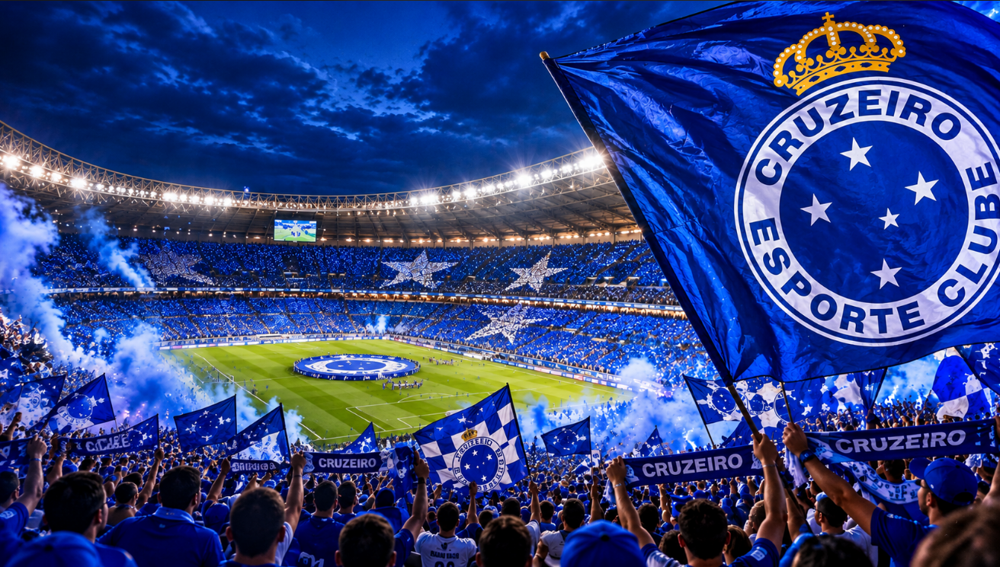
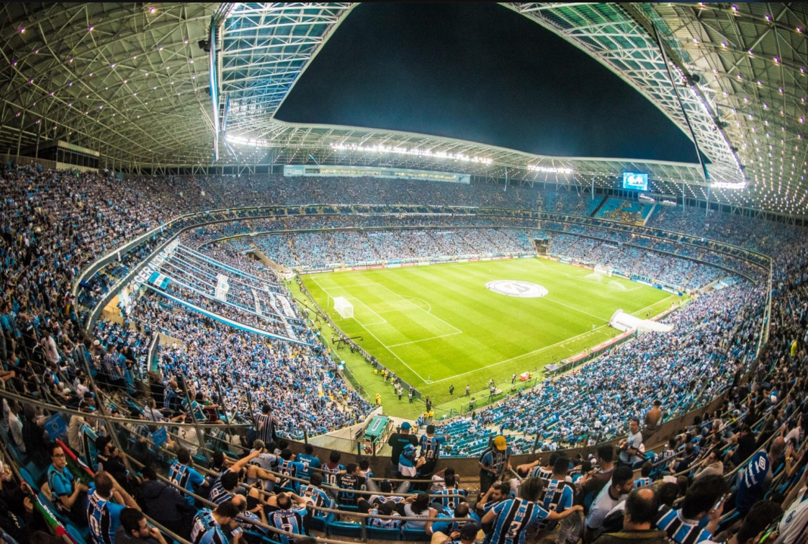
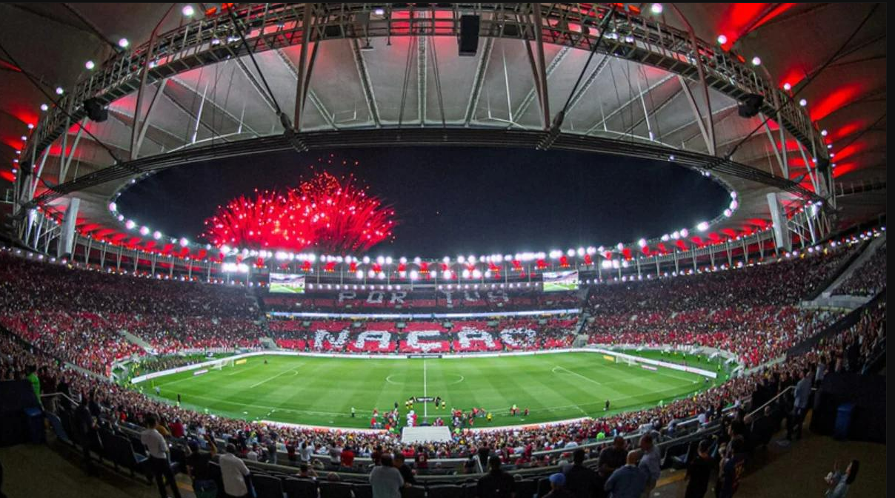
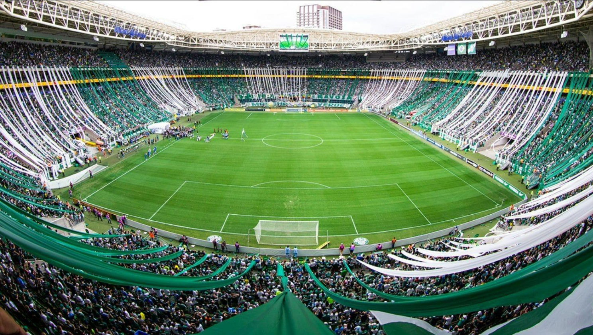
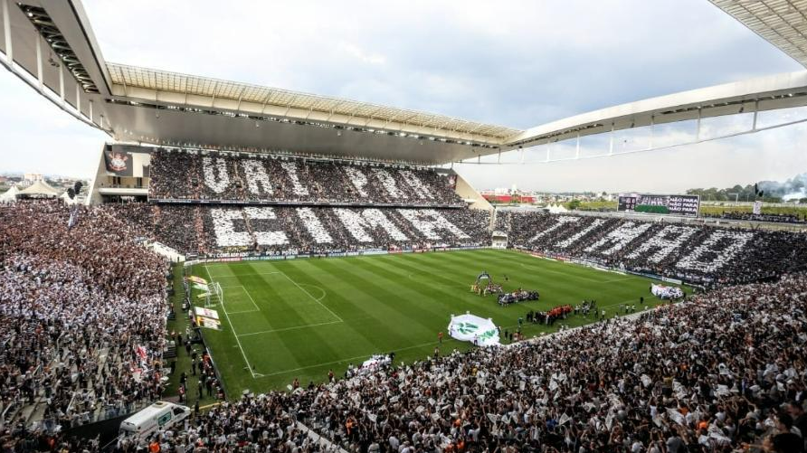
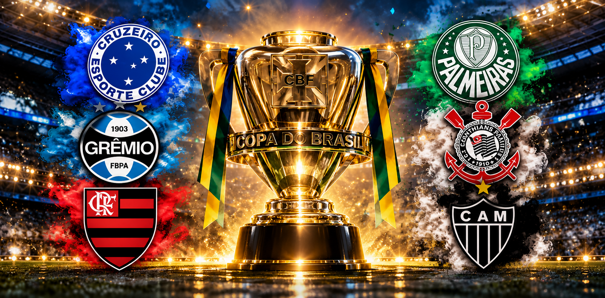

Cruzeiro
O maior campeão da Copa do Brasil! Com 6 títulos conquistados, o Cruzeiro construiu uma história de glórias, decisões inesquecíveis e grandes conquistas no futebol brasileiro.

O maior campeão da Copa do Brasil! Com 6 títulos conquistados, o Cruzeiro construiu uma história de glórias, decisões inesquecíveis e grandes conquistas no futebol brasileiro.

Com 5 títulos da Copa do Brasil, o Grêmio é um dos maiores vencedores da competição. Conhecido por sua tradição copeira, o Tricolor Gaúcho coleciona conquistas históricas e momentos inesquecíveis.

Dono de 5 títulos da Copa do Brasil, o Flamengo construiu uma trajetória marcada por grandes decisões, conquistas emocionantes e a força de sua torcida. O Rubro-Negro é um dos protagonistas da história da competição.

Com 4 títulos da Copa do Brasil, o Palmeiras escreveu capítulos importantes na história da competição. O Verdão se destaca por sua tradição vencedora, grandes decisões e conquistas memoráveis.

Com 4 títulos da Copa do Brasil, o Corinthians construiu uma trajetória de grandes conquistas e decisões emocionantes. Com a força da Fiel Torcida, o Timão marcou seu nome na história da competição.

Bicampeão da Copa do Brasil, com títulos conquistados em 2014 e 2021, o Atlético Mineiro escreveu momentos inesquecíveis na competição. Com muita raça e a força da Massa Atleticana, o Galo fez história no futebol brasileiro.

Uma competição repleta de emoção, rivalidade e grandes conquistas. Conheça os clubes que fizeram história e levantaram uma das taças mais desejadas do futebol brasileiro.
6 Títulos
5 Títulos
4 Títulos
5 Títulos
4 Títulos
2 Títulos